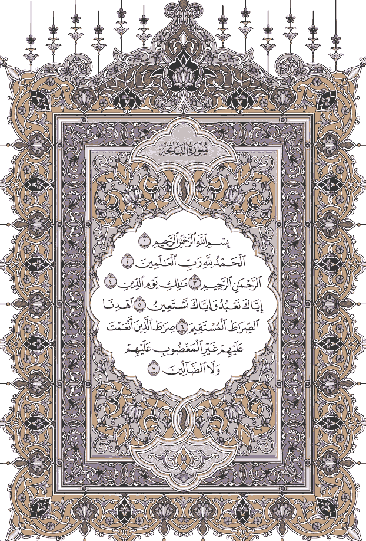

سورة الفاتحة
الجزء ١
|
صفحة ١

الإعدادات
✕
👓 وضع القراءة المريح
🔖 المفضلة
⬇ تحميل جميع الصفحات
الذهاب إلى صفحة
✕
انتقال
المفضلة
✕
اختر سورة
✕
اختر جزءًا
✕
☆ إضافة للمفضلة
↗ الذهاب لصفحة
📖 الذهاب لسورة
🗂 الذهاب لجزء
⚙ الإعدادات
✕ إلغاء